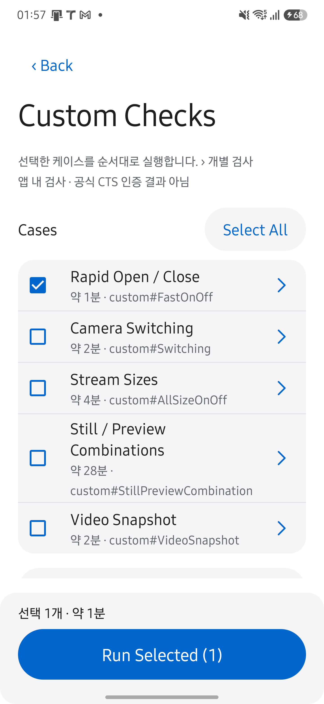
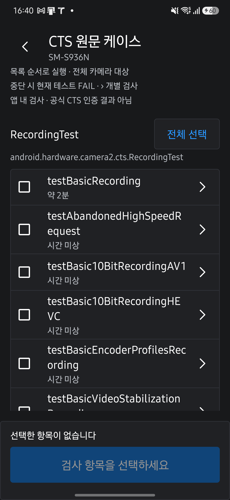
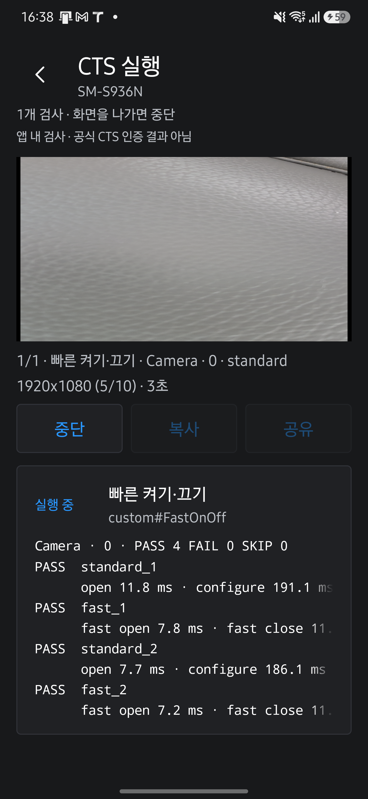
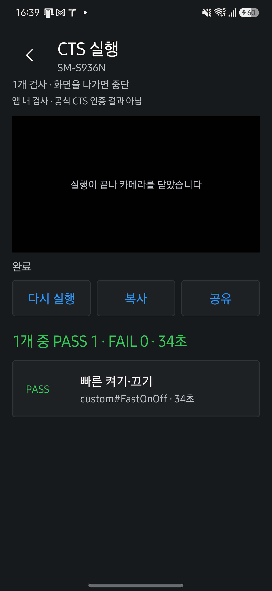

HAL CAMERA / User Guide
The same test, inside the app.
Lab → CTS에서 검사 방식을 고르고 실행하세요. 앱의 결과는 사전 점검용입니다. 공식 CTS 판정은 cts-tradefed의 test_result.xml로 확인합니다.
선택한 항목을 실행하세요
- Live의
Lab → CTS를 엽니다. 커스텀 케이스또는CTS 원문 케이스를 고릅니다. 차이가 궁금하면 방식 비교를 확인하세요.- 실행할 항목을 체크합니다. 하단에서 선택 개수와 예상 시간을 확인합니다.
실행을 누르고 필요한 권한을 허용합니다.- 끝난 카드를 눌러 결과를 확인합니다.
확인할 결과: 선택한 항목에 판정과 소요 시간이 표시됩니다. 실패나 SKIP이 있으면 판정 읽기에서 다음 확인 항목을 찾으세요.
| 필요할 때 | 조작과 결과 |
|---|---|
| 한꺼번에 선택합니다. | 그룹의 전체 선택을 누릅니다. 선택은 다음에 열 때도 유지됩니다. |
| 도중에 멈춥니다. | 중단을 누릅니다. 현재 항목은 중단됨, 나머지는 실행 안 함으로 남습니다. |
| 결과를 가져갑니다. | 복사는 전체 보고서를 클립보드에 넣습니다. 공유는 같은 내용을 다른 앱으로 보냅니다. |
| 다시 검사합니다. | 다시 실행을 누르면 같은 항목을 처음부터 실행합니다. |
권한·예상 시간·실행 순서
- Live의 카메라가
close(done)을 마친 뒤 CTS를 엽니다. - 카메라 권한이 필요하며 녹화 항목은 마이크 권한도 확인합니다.
- 항목마다 공개 카메라를 순회합니다. 컬러 출력이 없거나 외장 카메라이면 CTS와 같은 사유로 건너뜁니다.
- 한 항목이 카메라를 닫고 결과를 보고한 뒤 다음 항목을 시작합니다.
- 행마다 제목과 예상 시간을 표시합니다. 이력이 없는 원문 메서드는
시간 미상으로 표시하며, 커스텀 행에는 원본도 표시합니다. - 진행 중에는 단계별 결과를 바로 추가합니다. 완료 후에는 판정과 소요 시간을 표시하고 머리글에 전체 결과를 모읍니다.
항목 하나만 보려면 행의 ›를 누릅니다. 커스텀 케이스는 한 단계가 실패해도 나머지를 계속 실행합니다. CTS 원문은 중단 처리에 몇 초가 걸릴 수 있습니다.
단일 항목 실행과 내부 처리
항목 하나만 따로 보려면 행의 ›를 누릅니다. 커스텀 케이스는 CtsCaseActivity, CTS 원문은 VendoredCaseActivity가 열리며, 실행·중단·복사·공유의 동작은 아래와 같고 결과 표시만 그 항목 하나에 맞춰져 있습니다.
커스텀 케이스는 한 단계가 실패해도 나머지 단계와 카메라를 계속 실행합니다. 화면의 SurfaceView가 CTS의 Camera2SurfaceViewCtsActivity 역할을 하며, 러너가 필요한 크기로 버퍼를 바꾸고 surfaceChanged를 기다린 뒤 세션을 엽니다. 카메라 열기·세션 구성·첫 결과·닫기의 대기 시간은 CTS CameraTestUtils와 같은 3초입니다.
CTS 원문 케이스의 한 번 실행은 다릅니다. 실행을 누르면 카메라와 마이크 권한을 확인한 뒤 JUnit이 테스트 메서드를 작업 스레드에서 돌립니다. 테스트는 카메라 전부를 스스로 순회하므로 진행 중에는 경과 시간만 갱신되고, 실패가 생기면 그 즉시 실패 카드가 추가됩니다. 중단은 실행 중인 테스트가 쥔 카메라를 닫아 테스트를 실패시키는 방식이라 몇 초 뒤에 중단됨으로 끝납니다. JUnit에는 실행 중인 본문을 멈출 수단이 없기 때문입니다. 실행 화면 자체가 CTS의 Camera2SurfaceViewCtsActivity를 상속하므로 테스트의 updatePreviewSurface가 같은 SurfaceView를 그대로 씁니다.
검사 방식의 차이
| 방식 | 무엇을 실행하나요? | 판정 단위 |
|---|---|---|
| 커스텀 케이스 | CTS 규칙과 상수를 앱의 Kotlin으로 옮긴 다섯 가지 검사입니다. | 카메라와 단계별로 판정합니다. |
| CTS 원문 케이스 | AOSP의 Java 테스트를 앱 안의 JUnit으로 실행합니다. | 테스트 메서드 하나에 판정 하나를 냅니다. |
두 방식 모두 Benchmark의 반복 측정과 회귀 점수에는 포함하지 않습니다.
검사 실행 구조
sequenceDiagram
participant U as 선택한 목록
participant S as 실행 화면
participant R as 실행기
U->>S: 선택한 항목 실행
loop 목록 순서대로
alt 커스텀 케이스만 선택
S->>R: Runner 실행
R->>R: 정리와 카메라 종료
R-->>S: Rules의 단계별 판정
else CTS 원문만 선택
S->>R: JUnit 실행
R->>R: 테스트 종료와 카메라 정리
R-->>S: 메서드별 판정
end
end
한 번의 실행에는 한 종류만 들어갑니다. 취소하면 남은 항목은 실행하지 않으며, 다음 케이스는 현재 케이스의 정리가 끝난 뒤 시작합니다.
두 목록은 모두 체크리스트이고, 체크한 항목을 실행하면 CtsSuiteRunActivity가 위에서부터 차례로 돌립니다.
이 화면은 가져온 Camera2SurfaceViewCtsActivity를 상속하면서 커스텀 러너의 PreviewHost도 구현하므로 SurfaceView 하나로 두 종류를 다 호스트하지만, 목록이 분리되어 있으므로 한 번의 실행에는 한 종류만 들어갑니다.
커스텀 케이스의 규칙은 카메라를 모르는 순수 Kotlin이라 JVM 테스트로 검증하고, 러너가 CTS가 기기에서 읽는 값을 채워 넣습니다.
다섯 케이스는 같은 CtsRunner 계약을 구현하므로 화면은 케이스를 구분하지 않습니다.
CTS 원문 케이스는 코드를 옮기지 않으므로 검사 본문은 AOSP 소스를 따르며, 앱 실행에 필요한 instrumentation 대역과 공개 API 호환 패치를 적용합니다.
아래 화면은 2026년 9월 29일 Galaxy S25+·Android 16에서 HAL CAMERA 0.15.0을 실행해 촬영했습니다. 촬영 조건과 확인 범위를 함께 확인하세요. 이미지를 누르면 원본이 열립니다.
커스텀 케이스를 선택하세요
| 케이스 | 확인하는 동작 |
|---|---|
| 빠른 켜기·끄기 | 열고 닫는 두 순서의 첫 프레임을 비교합니다. |
| 카메라 전환 | 카메라를 바꿔 열고 녹화합니다. |
| 모든 크기 켜기·끄기 | 지원하는 모든 프리뷰 크기를 엽니다. |
| 정지 영상 × 프리뷰 조합 | JPEG와 프리뷰 크기 조합을 검사합니다. |
| 동영상 스냅샷 | 녹화하면서 사진을 한 장 찍습니다. |
횟수·시간·통과 조건
빠른 켜기·끄기 · custom#FastOnOff
표준 열기(열기 → 프리뷰 세션 → 첫 프레임 → 닫기)와 빠른 열기(열기 직후 닫기 → 다시 열기 → 첫 프레임 → 닫기)를 5회씩 번갈아 수행합니다. 첫 프레임의 SENSOR_TIMESTAMP와 프레임 번호를 검사하고, 마지막 줄에 두 방식의 첫 프레임 중앙값을 비교합니다.
카메라 전환 · custom#Switching
카메라를 차례로 열어 첫 프레임을 받고 닫는 전환을 5회 반복한 뒤, 카메라마다 가장 큰 CamcorderProfile로 3초 녹화합니다. 녹화는 파일·트랙·크기와 길이 오차 20 %만 검사합니다.
모든 크기 켜기·끄기 · custom#AllSizeOnOff
SurfaceHolder로 보고하는 프리뷰 크기 전부를 큰 것부터 하나씩 열어 첫 프레임을 확인합니다. 1080p 상한을 두지 않습니다.
정지 영상 × 프리뷰 조합 · custom#StillPreviewCombination
JPEG 크기 전부와 프리뷰 크기(1080p 이하) 전부의 조합마다 세션을 구성해 프리뷰 첫 프레임 뒤 정지 영상을 한 장 찍고, 요청한 크기의 디코딩 가능한 JPEG인지 검사합니다. StillCaptureTest#testStillPreviewCombination의 순서와 QCIF 예외를 따르되 AE·AF 수렴은 기다리지 않습니다.
동영상 스냅샷 · custom#VideoSnapshot
가장 큰 CamcorderProfile로 25초를 녹화하면서 5~20초 사이 무작위 시점에 같은 세션으로 JPEG 스냅샷을 한 장 찍습니다. 동영상은 RecordingTest#testVideoSnapshot의 프레임 드롭률 8 %(15 MP 초과 스냅샷은 12 %), 스냅샷은 크기와 디코딩을 검사합니다.
실제 화면 보기


custom# 원본은 CTS 클래스에 그대로 대응하는 메서드가 없는 케이스입니다. 검사 문구는 CTS CameraTestUtils에 같은 검사가 있으면 그 문구를 따릅니다. RecordingTest#testBasicRecording은 커스텀 케이스에 없습니다. 원문 그대로 실행하는 쪽이 옮겨 적는 쪽보다 정확하므로 CTS 원문 케이스로만 제공하며, 녹화 판정 규칙(BasicRecordingRules)은 카메라 전환과 동영상 스냅샷이 계속 공유합니다.
CTS 원문 메서드를 선택하세요
CTS 원문 케이스 목록은 :ctsvendor 모듈에 가져온 테스트 클래스의 @Test 메서드를 reflection으로 나열합니다. 지금 가져온 클래스는 세 개입니다.
| 클래스 | 검사하는 범위 |
|---|---|
RecordingTest |
CamcorderProfile 녹화, 동영상 스냅샷, 고속·슬로모션 녹화, 프리뷰 크기별 녹화 등 16개 메서드입니다. |
StillCaptureTest |
JPEG·HEIC·RAW·DNG 촬영, AE/AF 수렴, 줌, 회전, 초점 거리, 프리뷰와 정지 영상 크기 조합, 타임스탬프 등 21개 메서드입니다. |
BurstCaptureTest |
JPEG·YUV·RAW 연속 촬영의 프레임 순서와 처리량을 검사하는 3개 메서드입니다. |
업스트림 본문이 TODO뿐인 testCameraRecorderOrdering·testMediaCodecRecording·testTimelapseRecording은 목록에서 제외합니다. 측정 이력이 없는 메서드는 시간 미상으로 표시합니다. UiAutomation이나 @TestApi가 필요한 메서드는 초기화 단계에서 실패할 수 있습니다. 기존 기기별 결과와 소요 시간은 Validation에 있습니다.
실제 화면 보기


가져온 소스는 AOSP android16-release 브랜치의 cts/tests/camera와 frameworks/ex/camera2/public이며, 원본 커밋과 적용한 패치 여덟 건(@TestApi·@FlaggedApi 호출을 공개 API로 바꾸거나 제거하고, shell 권한 행을 만들지 않게 한 것)은 ctsvendor/UPSTREAM.md에 있습니다. Android 14(API 34) 아래 기기에서는 이 경로가 비활성화됩니다. 업스트림이 이 파일 집합을 min_sdk_version 34로 빌드하기 때문입니다.
실제 화면 보기


판정을 읽으세요
커스텀 케이스는 카메라와 단계별로 판정합니다. PASS 행에도 시간과 수치를 남깁니다. FAIL의 상세 문구는 CTS assertion 메시지와 같습니다.
카메라·단계 이름 읽기
커스텀 케이스의 PASS·FAIL·SKIP은 카메라와 단계 단위로 붙습니다.
카메라는 진행 줄과 보고서 모두 Camera · 0처럼 축약 표기로 적습니다.
한 줄에 단계와 수치가 함께 들어가기 때문입니다.
단계는 케이스마다 다릅니다.
동영상 스냅샷은 프로파일 이름, 빠른 켜기·끄기는 standard_1·fast_1과 compare, 카메라 전환은 round_1과 record, 크기 케이스는 1920x1080, 조합 케이스는 4000x3000/1920x1080처럼 정지 영상과 프리뷰 크기입니다.
PASS 행에도 열기·세션 구성·첫 프레임·닫기의 소요 시간이나 녹화 길이·프레임 수 같은 수치를 남겨 경계에 가까운 통과를 다시 실행하지 않고 볼 수 있습니다.
FAIL의 상세 문구는 CTS의 assertion 메시지와 같으므로 원본 테스트 결과와 나란히 읽을 수 있습니다.
CTS 원문은 아래 표로 판정을 읽으세요. SKIP은 통과했다는 뜻이 아닙니다.
| 판정 | 조건 | 다음에 확인할 내용 |
|---|---|---|
| PASS | JUnit 실패가 없고 카메라를 하나 이상 열었습니다. | 실행 조건과 측정값을 확인합니다. |
| FAIL | 실패가 한 건 이상 있습니다. | 실패 카드의 예외 메시지와 카메라 ID를 확인합니다. |
| SKIP | assumption으로 건너뛰었거나 모든 카메라를 건너뛰어 하나도 열지 않았습니다. | 건너뛴 이유에서 미지원 기능과 조건을 확인합니다. |
SKIP 이유와 로그 읽기
앱은 openDevice 호출 기록으로 카메라를 실제로 열었는지 확인합니다. 원문에서 모든 카메라를 continue로 건너뛰고 통과한 경우도 앱에서는 SKIP으로 표시합니다.
건너뛴 이유 카드는 다음 근거를 모읍니다.
- assumption 메시지를 표시합니다.
- 테스트가 남긴 “… skipping” 로그를 표시합니다. 예를 들어
Camera 0 does not support HEIC_ULTRAHDR, skipping은 카메라 0이 해당 형식을 지원하지 않는다는 뜻입니다. SkipDiagnosis가 원문의continue조건을 다시 확인한 키와 값을 표시합니다. HEIC UltraHDR 검사라면SCALER_STREAM_CONFIGURATION_MAP에ImageFormat.HEIC_ULTRAHDR(0x48455548)가 있는지와 실제 출력 형식 목록을 보여 줍니다.
모든 카메라의 이유가 같으면 한 줄로, 다르면 카메라별로 표시합니다. 업스트림 코드 자체가 카메라를 열지 않는 메서드도 이유를 남깁니다. 예를 들어 10비트 AV1 경로는 getDynamicRangeProfile()의 switch에 AV1 case가 없습니다.
앱은 자기 프로세스의 logcat만 읽습니다. 카메라별·프로파일별 세부 정보가 모두 남는 것은 아닙니다. 실패 카드에는 예외 메시지와 CTS 호출 위치 세 줄을 표시합니다. 어느 카메라에서 실패했는지는 메시지의 카메라 ID로 확인하세요.
녹화한 동영상은 앱 전용 폴더에 test_video.mp4로 쓰고 판정 뒤 삭제하며, 정지 영상과 스냅샷은 크기와 디코딩만 확인하고 버립니다. CTS 원문 케이스도 같은 앱 전용 폴더(getExternalFilesDir)에 씁니다. 앨범에는 아무것도 남지 않습니다.
실제 화면 보기


케이스를 추가하세요
커스텀 케이스를 추가하려면 다음 순서를 따릅니다.
- 케이스별 하위 패키지(
cts/onoff/처럼)에 판정을 담은 순수 Kotlin…Rules와 카메라를 다루는…Runner를 둡니다. 러너는CameraCaseRunner를 상속해runCamera(카메라마다) 또는runCameras(카메라를 섞어 쓰는 경우)를 구현합니다. - 열기 → 프리뷰 → 첫 프레임 → 닫기가 필요하면
openCycle과OpenCycle을, 녹화가 필요하면CamcorderRecording을, 정지 영상이 필요하면JpegReader와Camera2Ops.captureStill을 재사용합니다. CtsCatalog에 id·원본·제목·요약을,CtsRunners에 러너 생성을 등록합니다. 규칙의 JVM 테스트를 함께 씁니다.
CTS 원문 클래스를 추가하려면 테스트마다 코드를 쓰지 않습니다.
- AOSP 같은 브랜치에서 테스트 클래스 파일을
ctsvendor/src/main/java/의 같은 패키지 경로에 복사합니다.Camera2SurfaceViewTestCase나Camera2AndroidTestRule계열이 아니면 그 기반 클래스도 함께 가져옵니다. ./gradlew :ctsvendor:compileDebugJavaWithJavac로 컴파일합니다. 오류가 난 호출이 곧@TestApi·@FlaggedApi목록이므로,UPSTREAM.md의 패치처럼 공개 API로 바꾸거나 그 메서드를 제거하고 패치 목록에 적습니다.VendoredCatalog.classes에 클래스를 넣습니다.@Test메서드는 reflection으로 나열되므로 목록은 자동으로 늘어납니다.
코드 근거를 확인하세요
저장소의 app/src/main/java/dev/halcamera/cts/에서 CtsEntryActivity.kt(방식 선택), CtsCatalog.kt(케이스 목록), CtsRunner.kt·CameraCaseRunner.kt·Camera2Ops.kt(공통 계약과 Camera2 호출), CtsCaseListActivity.kt·CtsCaseActivity.kt(화면), CaseReportPresenter.kt(보고서), suite/의 CtsChecklistActivity.kt·CtsSuiteRunActivity.kt(체크리스트와 차례 실행)와 SuitePlan.kt·SuiteReport.kt(선택·예상 시간·통합 보고서), 그리고 onoff/·switching/·sizes/·combination/·snapshot/의 …Rules.kt(판정)와 …Runner.kt(실행), 공유 규칙 recording/BasicRecordingRules.kt를 확인하세요. CTS 원문 경로는 cts/vendored/의 두 화면과 ctsvendor/src/main/java/dev/halcamera/ctsvendor/의 VendoredCts.kt·VendoredRun.kt·VendoredCatalog.kt, 패치 목록 ctsvendor/UPSTREAM.md입니다. JVM 테스트는 app/src/test/java/dev/halcamera/cts/에 있습니다. 코드 확인과 기기 검증의 범위는 Validation에서 구분합니다.
다음 단계: 판정에 쓰인 시간 규칙이 어디서 오는지 Benchmark의 측정 범위와 비교해 읽으세요. CTS는 통과·실패를, Benchmark는 얼마나 걸리는지를 답합니다.